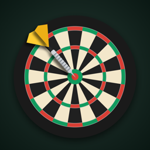

A scorer for 301, 501, 701, Cricket and Around the Clock. Enter each dart, and it handles the counting, busts, checkouts and places for up to six players.
Open a ticket on the support page on GitHub. Tell us your device, iOS version and what happened, and we'll get back to you.
How do I enter darts? Use the keypad: type the number, and tap D or T first for a double or treble (D16, T20). Plain numbers work too, so 60 is read as T20. Tap Next to move to the next dart, or switch to the dartboard pad with the target button at the top.
What's a bust? Going below zero. With Double Out, finishing on anything but a double, or leaving 1, is also a bust. A bust turn scores nothing.
What does Skip do? It records a turn that scores nothing, for when someone throws more than they need.
I entered the wrong score. Tap the undo arrow at the top to take back the last turn. You can keep undoing.
How does Cricket work? Close 15 to 20 and the bull with three marks each. Extra marks on a number you've closed score points while someone else still has it open. Close everything with the most points to finish.
How do I show the score on my TV? Open Control Center, tap Screen Mirroring and choose your Apple TV or AirPlay TV. The TV shows a big scoreboard while you keep scoring on your phone.
How do handicaps work? In setup, tap a player's starting score and pick a different one, like 401 instead of 501.
Where are my stats? Tap the chart button on the setup screen. Stats add up for each saved player across finished games.
The developer collects no data. Read the full privacy policy.